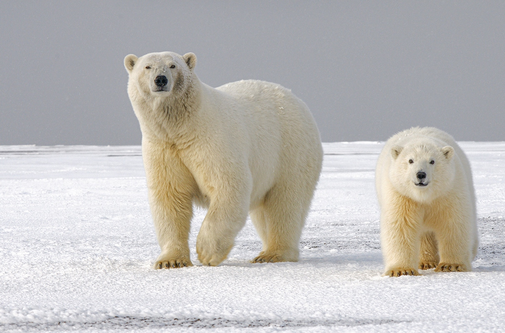

Beren
Beren zijn grote zoogdieren die in verschillende gebieden op de wereld voorkomen. Sommige beren leven in bossen, terwijl andere beren voorkomen in koude gebieden.
Voorbeelden van berensoorten
- Bruine beer
- IJsbeer
- Amerikaanse zwarte beer
- Reuzenpanda
- Lippenbeer
Niet iedere berensoort eet hetzelfde. Sommige beren eten veel planten en fruit, terwijl andere beren ook vis en andere dieren eten.